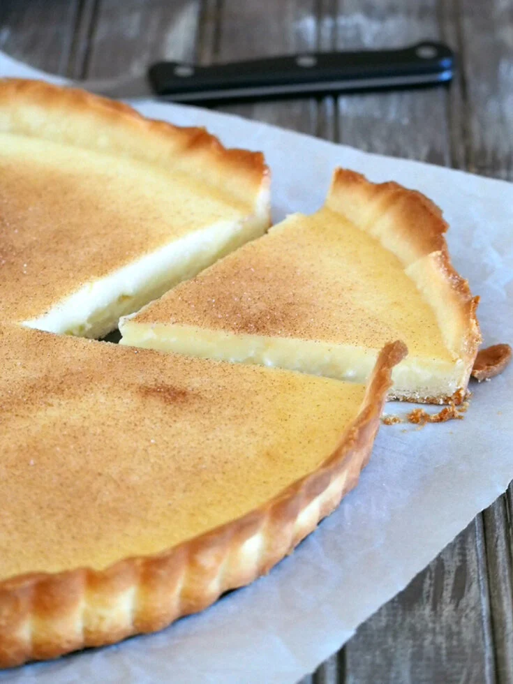

Odin Recipes
Milktart
Milktart
image credit:Woman scribbles

Description
Milk Tart, is a beloved South African dessert known for its creamy custard filling and delicate pastry crust. Lightly flavored with cinnamon, it’s a perfect combination of sweet, smooth, and comforting. Traditionally served at tea time or as a dessert, Milk Tart can be enjoyed warm or chilled. The custard is made primarily from milk, sugar, and eggs, giving it a soft and silky texture that melts in your mouth.
Ingredients
- 1 pre-made pie crust (or homemade pastry)
- 2 tablespoons butter
- ½ cup sugar
- 2 tablespoons flour
- 2 tablespoons cornstarch
- 2 eggs
- 1 teaspoon vanilla essence
- Ground cinnamon for topping
Steps
- Preheat your oven to 180°C (350°F).
- Line a pie dish with the pastry crust, trim the edges, and bake it blind for 10 minutes to set the base.
- In a saucepan, heat the milk and butter until just before boiling.
- In a bowl, mix the sugar, flour, cornstarch, and eggs until smooth.
- Slowly pour the hot milk mixture into the egg mixture, whisking constantly to avoid curdling.
- Return the mixture to the saucepan and cook over low heat until it thickens into a custard consistency.
- Remove from heat and stir in the vanilla essence.
- Pour the custard into the prepared pie crust.
- Sprinkle the top generously with ground cinnamon.
- Bake for 15–20 minutes, or until the filling is set but still slightly wobbly in the center.
- Let it cool before serving. Enjoy warm or chilled.